입양
1,898구조된 아이들1,670입양 간 아이들35가족을 기다리는 아이들
상처를 가지고 있는 구조동물을 가족으로 맞이한다는 것은 결코 쉬운 결정이 아니란 걸 알지만, 그럼에도 우리는 사랑의 힘을 믿습니다. 위액트의 구조견들은 국내와 미국, 캐나다에서 입양이 가능합니다.
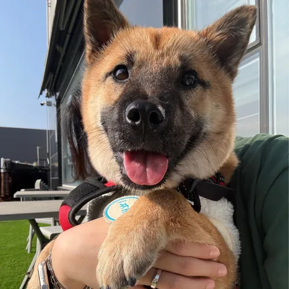
배찌11.4kg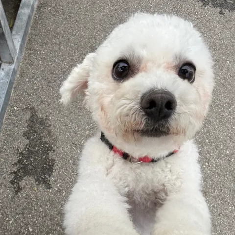
위풍소형견 4.8kg 마스소형견 4.7kg
마스소형견 4.7kg 누니소형견 10kg
누니소형견 10kg 아코소형견 9.2kg
아코소형견 9.2kg 당당소형견 4.76kg
당당소형견 4.76kg 짱이소형견 3.1kg
짱이소형견 3.1kg 레임소형견 9.66kg
레임소형견 9.66kg 빈시대형견 43kg
빈시대형견 43kg 쏨땀소형견 2.4kg
쏨땀소형견 2.4kg 남구대형견 19kg
남구대형견 19kg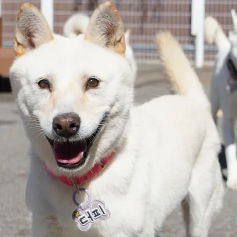
더피중형견 14.2kg 고운소형견 7.62kg
고운소형견 7.62kg 가영대형견 21.7kg
가영대형견 21.7kg 순디소형견 6.4kg
순디소형견 6.4kg 모리스대형견 20.7kg
모리스대형견 20.7kg 바람중형견 16.8kg
바람중형견 16.8kg 안온소형묘 4kg
안온소형묘 4kg 보름중형견 17.2kg
보름중형견 17.2kg 에디소형견 6.62kg
에디소형견 6.62kg 제리중형견 22kg
제리중형견 22kg 나오미중형견 22.7kg
나오미중형견 22.7kg 비아중형견 19.5kg
비아중형견 19.5kg 알중형견 15.9kg
알중형견 15.9kg 단테중형견 17.4kg
단테중형견 17.4kg 베티중형견 17.9kg
베티중형견 17.9kg 차콜2.2kg
차콜2.2kg 버니1.75kg
버니1.75kg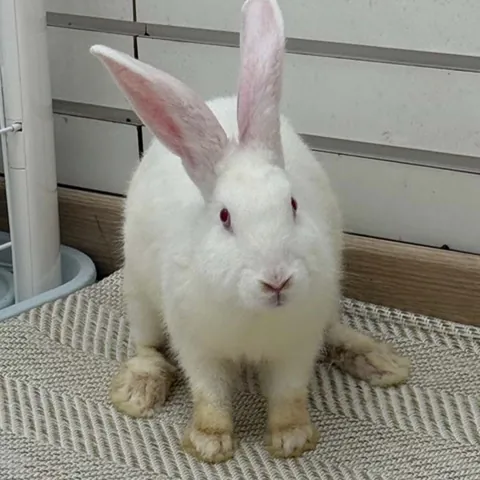
벅스1.9kg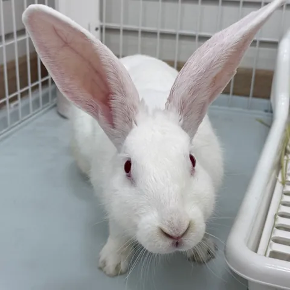
구름3.54kg 프랑3.4kg
프랑3.4kg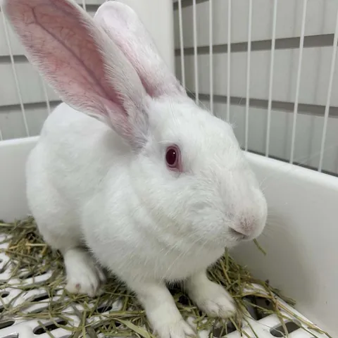
몰랑3kg 키티1.3kg
키티1.3kg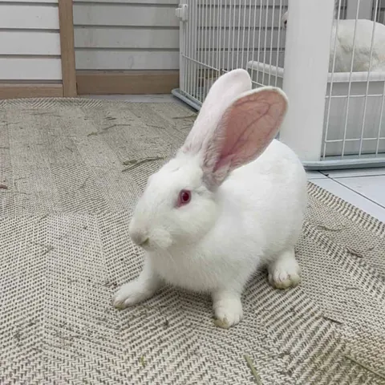
도키1.67kg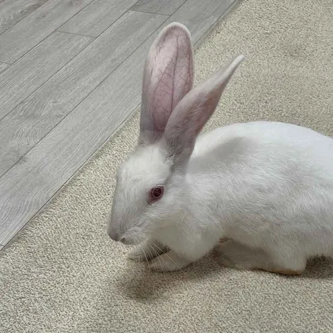
오키1.2kg
조건에 맞는 아이가 없습니다.
최근 구조되어 성향을 파악 중인 아이들입니다. 카카오톡 사단법인 위액트 채널로 궁금하신 아이에 대해 문의해 주세요. 입양 준비 상태와 입양 가능 예상일을 안내해 드립니다.
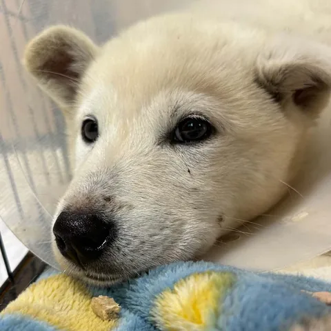
니키성장중인 강아지 홉스성장중인 강아지
홉스성장중인 강아지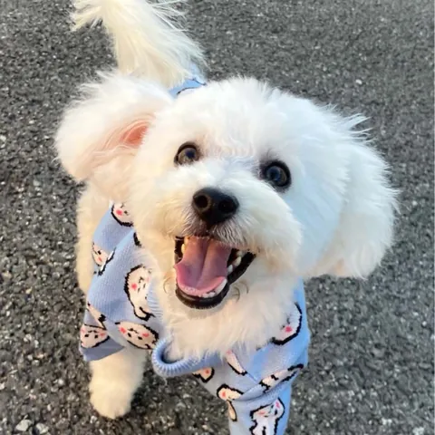
도티성장중인 강아지 4.5kg 어텀소형견 8.5kg
어텀소형견 8.5kg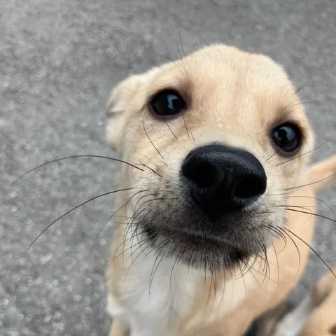
테나소형견 4.6kg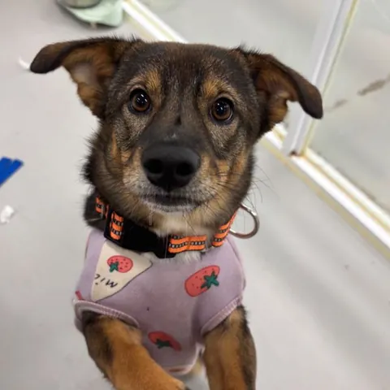
뮤즈소형견 7.3kg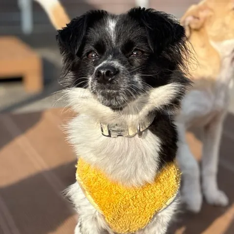
시리소형견 3.98kg 디테중형견 13.7kg
디테중형견 13.7kg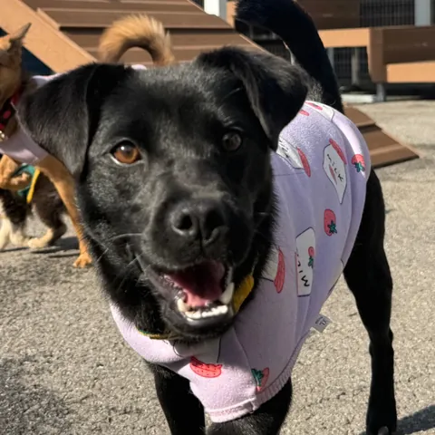
유노소형견 8.2kg 이또성장중인 강아지 2.62kg
이또성장중인 강아지 2.62kg 포테성장중인 강아지 2.48kg
포테성장중인 강아지 2.48kg 모스14.5kg
모스14.5kg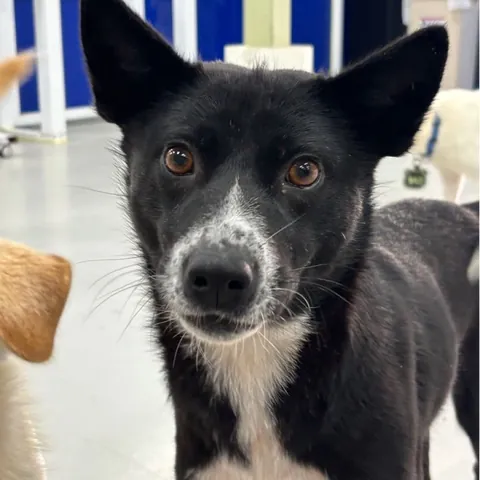
다오12.4kg 우니11kg
우니11kg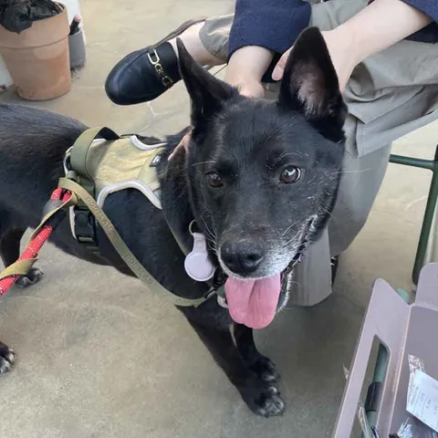
퀴니중형견 18.2kg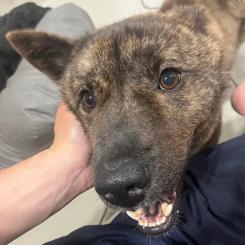
파코중형견 18kg 하르중형견 13.7kg
하르중형견 13.7kg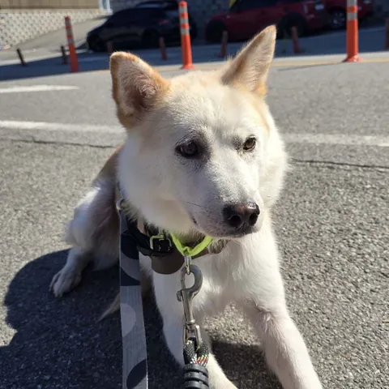
로잘린중형견 16.2kg 흑미 가족여
흑미 가족여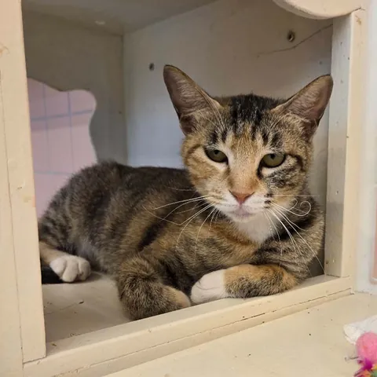
쥐클소형묘 2.4kg 라타소형묘 2.7kg
라타소형묘 2.7kg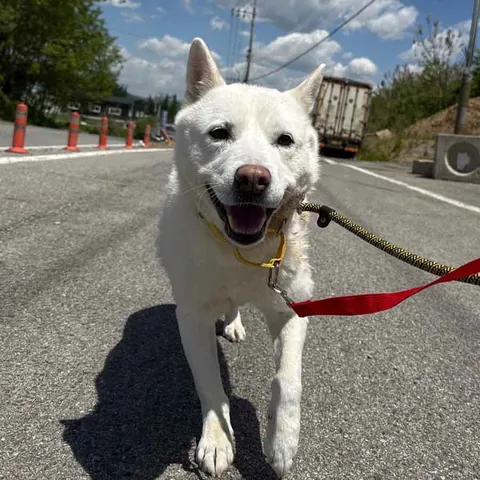
케이중형견 19kg
조건에 맞는 아이가 없습니다.
가족을 기다린 지 오래된 아이들이 있습니다. 위액트는 아이들이 가족의 품에 안길 그 날을 기대하며 정성껏 지켜내고 있습니다. 이 아이들의 이야기에 귀 기울여 주세요.
 오래 기다린 아이듀이중형견 17.7kg
오래 기다린 아이듀이중형견 17.7kg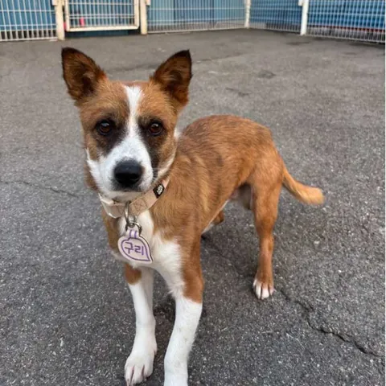
오래 기다린 아이구리소형견 9kg 오래 기다린 아이튼튼대형견 35kg
오래 기다린 아이튼튼대형견 35kg 오래 기다린 아이버트중형견 14.5kg
오래 기다린 아이버트중형견 14.5kg 오래 기다린 아이웅이소형견 9.84kg
오래 기다린 아이웅이소형견 9.84kg 오래 기다린 아이비타소형견 7.3kg
오래 기다린 아이비타소형견 7.3kg
조건에 맞는 아이가 없습니다.
사랑의 손길을 내밀어 주신 분들 덕분에 평생을 함께할 진짜 가족을 만났습니다. 입양 가족과 함께 사랑으로 물들여 갈 견생 2막을, 위액트가 끝까지 힘차게 응원합니다.
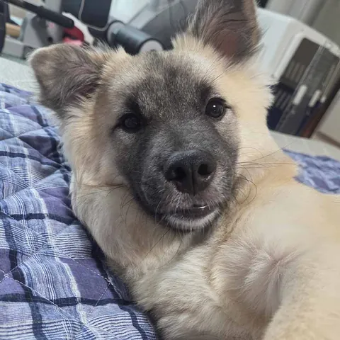
유신성장 중인 강아지 8.4kg 하치성장중인 강아지 3.3kg
하치성장중인 강아지 3.3kg 지기성장 중인 강아지 2.1kg
지기성장 중인 강아지 2.1kg 살랑성장 중인 강아지 1.9kg
살랑성장 중인 강아지 1.9kg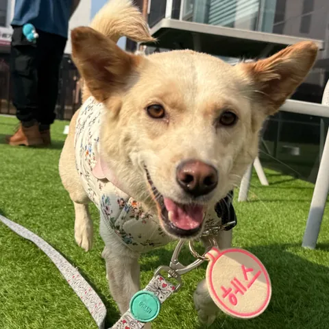
헤스중형견 10.5kg 선덕소형견 4.2kg
선덕소형견 4.2kg 마린대형견 29kg
마린대형견 29kg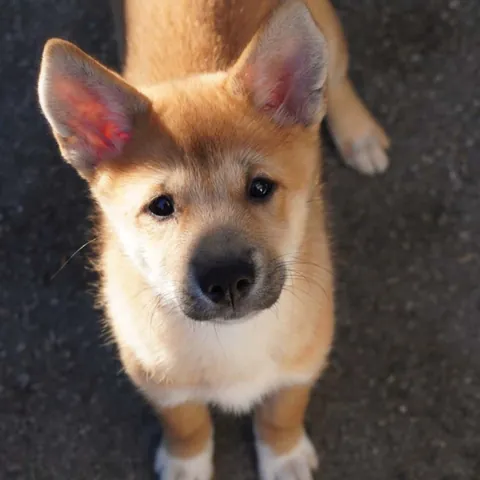
티코성장중인 강아지 4kg 소연중형견 12.9kg
소연중형견 12.9kg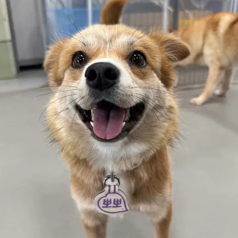
뽀뽀소형견 7.8kg 구미중형견 10.5kg
구미중형견 10.5kg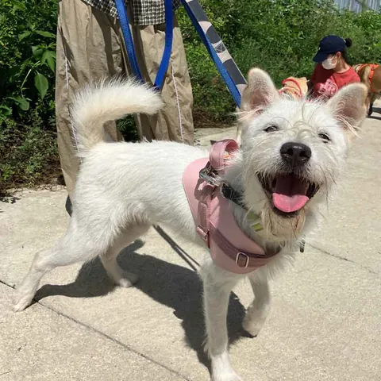
무민중형견 17.5kg 두부토끼
두부토끼 도토리토끼
도토리토끼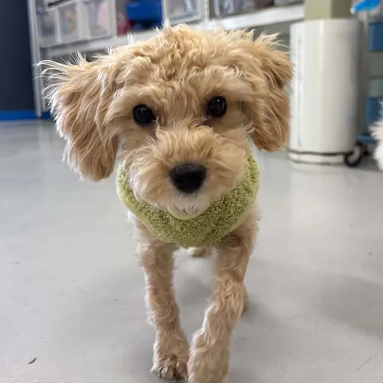
피노성장중인 강아지 2.8kg- 케피8.6kg
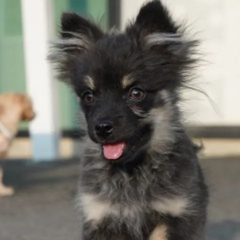
오소리성장중인 강아지 3.7kg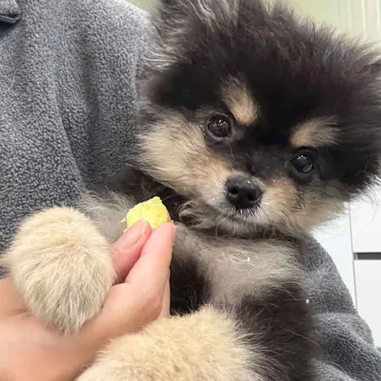
보바성장중인 강아지 1kg 위시성장중인 강아지 3kg
위시성장중인 강아지 3kg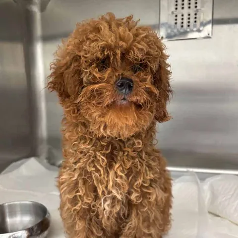
마고성장중인 강아지 1.4kg- 폴짝성장중인 강아지 2.4kg
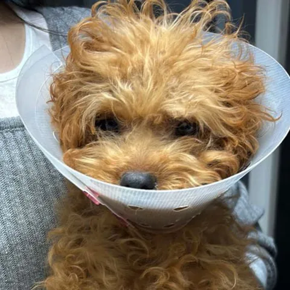
에피성장중인 강아지 2.1kg 리듬성장중인 강아지 1kg
리듬성장중인 강아지 1kg 릴루성장중인 강아지 720g
릴루성장중인 강아지 720g- 푸키성장중인 강아지 1.6kg
 알로성장중인 강아지 1.35kg
알로성장중인 강아지 1.35kg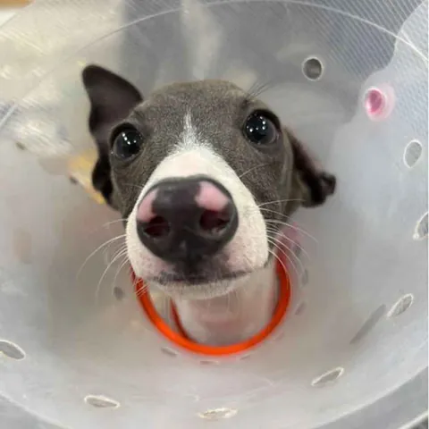
구스성장중인 강아지 3.82kg 영웅대형견 29.3kg
영웅대형견 29.3kg 리치중형견 15.7kg
리치중형견 15.7kg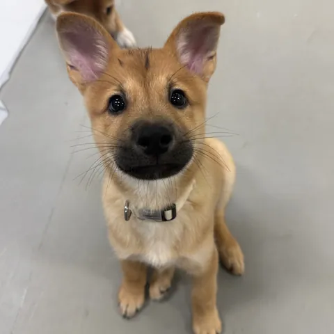
삐코성장중인 강아지 6kg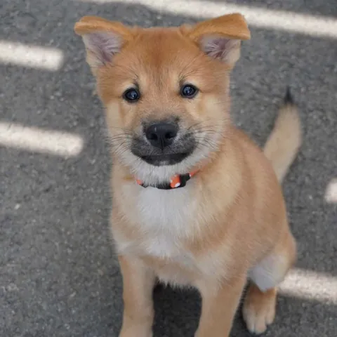
엔초성장중인 강아지 1.14kg 봉봉성장중인 강아지 1.31kg
봉봉성장중인 강아지 1.31kg 또아성장중인 강아지 1.13kg
또아성장중인 강아지 1.13kg- 오름소형견 3.9kg
 와쿠성장중인 강아지 975g
와쿠성장중인 강아지 975g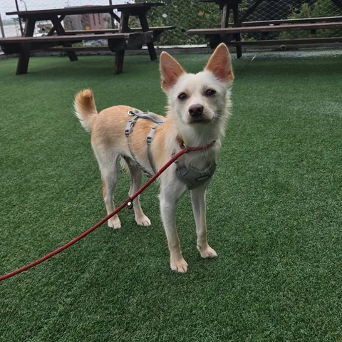
하슈소형견 5.6kg 링고중형견 11.9kg
링고중형견 11.9kg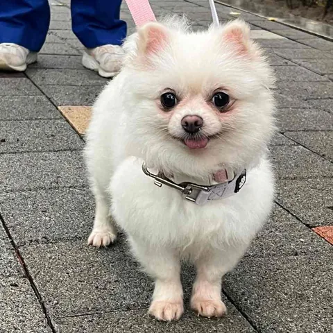
우유소형견 2.4kg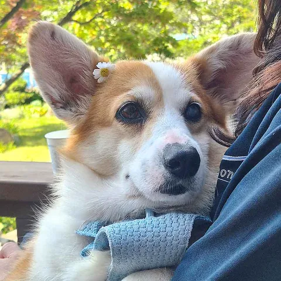
해성중형견 12kg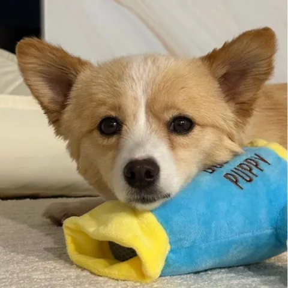
로로소형견 4.8kg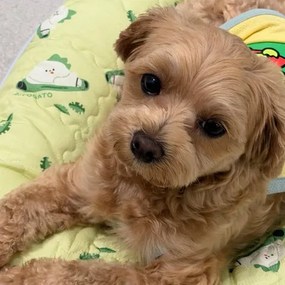
유채소형견 3.8kg 바다소형견 1.6kg
바다소형견 1.6kg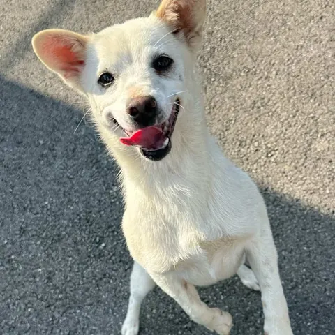
히토소형견 7.8kg 타이중형견 11.4kg
타이중형견 11.4kg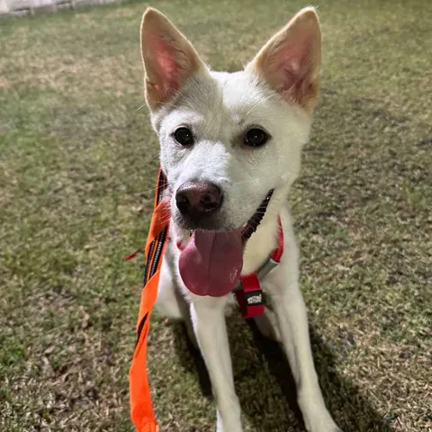
찰떡중형견 17kg 다복소형견 2.6kg
다복소형견 2.6kg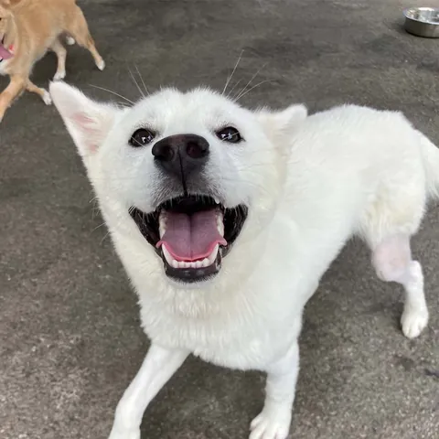
파이중형견 12.1kg 무삥중형견 14.5kg
무삥중형견 14.5kg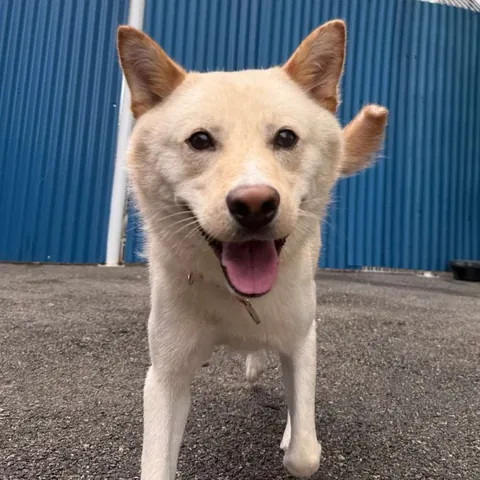
수안중형견 18kg 젠젠8.7kg 소형견
젠젠8.7kg 소형견 태이소형견 6.7kg
태이소형견 6.7kg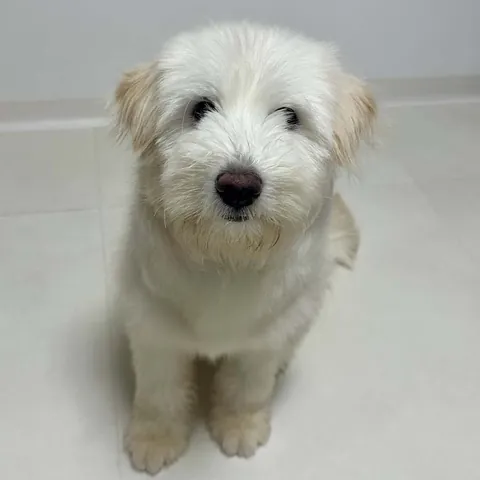
덕혜성장중인 강아지 8.4kg 웨이중형견 10.4kg
웨이중형견 10.4kg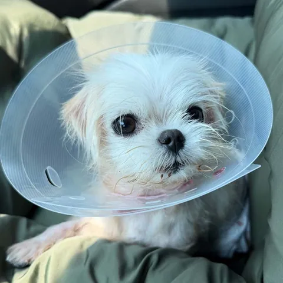
몽실소형견 1.7kg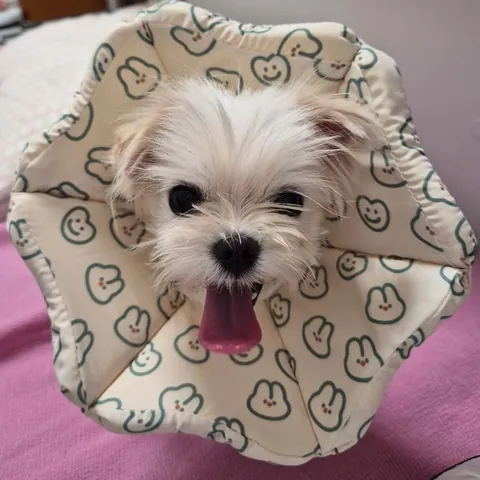
햅쌀소형견 1.7kg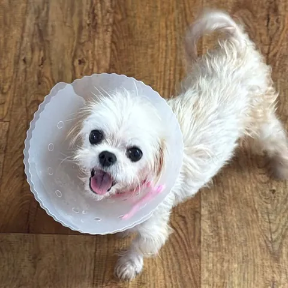
시오소형견 2.3kg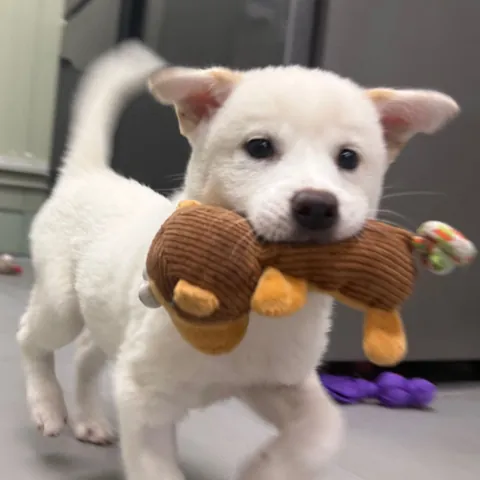
설기성장중인 강아지 3.2kg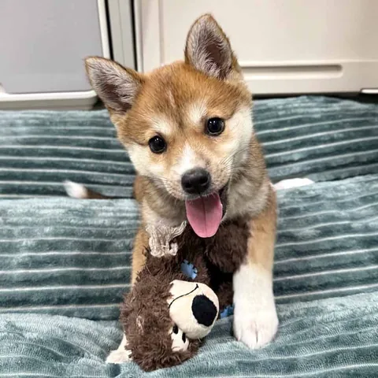
밤톨성장중인 강아지 2.6kg 오복성장중인 강아지 175g
오복성장중인 강아지 175g 매튜대형견 22.8kg
매튜대형견 22.8kg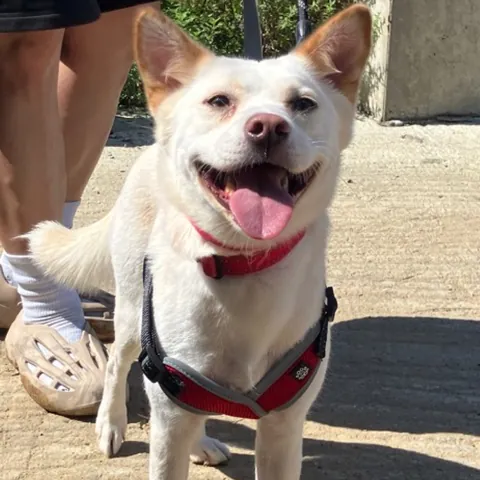
예원소형견 11.5kg- 푸치중형견 14.8kg
 대프니중형견 17.4kg
대프니중형견 17.4kg 산들중형견 18.2kg
산들중형견 18.2kg- 로미오대형견 23.9kg
- 알밤소형견 10.2kg
 틸리중형견 19.1kg
틸리중형견 19.1kg 하츄중형견 12.3kg
하츄중형견 12.3kg 클로에대형견 22.3kg
클로에대형견 22.3kg- 보보중형견 16.3kg
- 후니중형견 14.2kg
 섀도우소형견 7.2kg
섀도우소형견 7.2kg- 빅스중형견 16.2kg
- 해밀소형견 7kg
- 솔솔중형견 14.3kg
 콩이성장중인 강아지 10kg
콩이성장중인 강아지 10kg 마주성장중인 강아지 10.1kg
마주성장중인 강아지 10.1kg 챈스중형견 11.9kg
챈스중형견 11.9kg 윈디소형견 7.6kg
윈디소형견 7.6kg 다루중형견 10.86kg
다루중형견 10.86kg 지구소형견 6.56kg
지구소형견 6.56kg- 메이소형견 7.3kg
 몽떼소형견 4.3kg
몽떼소형견 4.3kg 짱구소형견
짱구소형견 탱글소형견 2.3kg
탱글소형견 2.3kg 다미소형견 4.16kg
다미소형견 4.16kg- 푸름중형견 14.1kg
- 리샤소형견 9.4kg
 구름소형견 2.4kg
구름소형견 2.4kg 해랑소형견 2.4kg
해랑소형견 2.4kg 달고나소형견 10.3kg
달고나소형견 10.3kg 월아토끼
월아토끼- 팥이성장 중인 강아지 5.2kg
 단츄중형견 11.3kg
단츄중형견 11.3kg 루가소형견 6.55kg
루가소형견 6.55kg 축복이중형견 18kg
축복이중형견 18kg 로또중형견 16kg
로또중형견 16kg- 펀치소형견 6.24kg
- 오포중형견 12.9kg
 린다대형견 24.4kg
린다대형견 24.4kg
조건에 맞는 아이가 없습니다.
입양 절차
4단계- 01
입양 신청서
마음에 둔 아이의 이름을 적어 입양 신청서를 보냅니다.
입양 신청서 - 02
검토와 연락
신청서가 통과되면 1주 이내에 카카오톡으로 연락드립니다. 반려되는 경우에는 따로 연락드리지 않습니다.
- 03
인터뷰와 만남
가정 환경 검토와 심층 인터뷰를 거칩니다. 아이를 직접 만나고 싶다면 사전 상담 후 일정을 맞춥니다.
카카오톡 상담 - 04
입양 후에도
입양 후에도 아이가 새 가족과 잘 지내는지 계속 살핍니다.
입양입양하고 싶은 개를 보러 가고 싶습니다. 어떻게 해야 하나요?
위액트 구조견을 직접 만나보고 싶으신 경우, 사전 상담을 통해 일정 조율 후 사전만남이 진행됩니다.
위액트 입양팀 활동가들은 모두 현업을 병행하며 활동비를 받지 않는 자원봉사자로, 구조견들이 보호 중인 장소에 상시 대기하고 있지 않습니다. 이로 인해 별도의 일정 조율 없이 방문하거나 만남을 진행하는 것은 어려운 점 양해 부탁드립니다.
사전만남을 희망하시는 경우, 아래 링크를 통해 문의 및 상담을 남겨주시면 확인 후 개별적으로 안내드리겠습니다.
카카오채널
입양위액트의 입양 절차는 어떻게 되나요?
위액트의 입양 절차는 아래 이미지와 같이 진행됩니다.
1차 신청서 접수 후 반려되는 경우에는 별도 연락드리지 않는 점 참고 부탁드리며, 신청서 접수 후 통과가 되는 경우에는 최대 1주 이내에 카카오톡으로 연락드리고 있습니다.
입양반려동물에 대해 잘 모릅니다. 입양 준비를 어떻게 해야하나요?
반려동물에 대해 잘 알지 못하셔도 괜찮습니다. 입양은 완벽한 준비보다 보호자로서 책임감을 가지고 부족한 부분을 배우며 서로의 빈 곳을 채워가는 과정입니다. 다만 구조 동물의 특성상 입양 전 기본적인 이해와 준비는 필요합니다. 위액트에서는 입양 과정 중 상담과 인터뷰를 통해 반려동물의 생활과 책임에 대해 안내드리며, 보호자님의 상황과 준비 정도를 함께 확인하고 있습니다.
가족 구성원 모두의 동의, 끝까지 책임질 수 있는 환경과 마음가짐이 중요하며, 경험이 부족하더라도 배우려는 의지가 있다면 위액트와 함께 차근차근 입양을 준비하실 수 있습니다.
입양 상담은 아래 링크를 통해 가능합니다.
카카오채널
입양입양신청서를 제출했는데 연락이 오지 않습니다. 심사 결과를 알 수 없나요?
입양 신청서 제출 후 반려 시에는 개별 연락을 드리지 않으며, 1차 화상 인터뷰 후 반려가 되는 경우에는 개별 통보를 드립니다.
신청서 접수 후 통과가 되는 경우에는 최대 1주 이내에 카카오톡으로 연락드리고 있습니다.
입양위액트의 입양 절차는 왜 다른가요?
입양까지의 과정이 길고 힘들다고 생각하실 수 있으나, 위액트의 밀도있는 입양 절차는 구조견을 위한 최소한의 안전 장치입니다. 구조된 아이들은 우리가 상상하기 어려울 만큼 많은 시련과 고통을 겪었습니다. 평생을 고되게 살아온 아이들은 가족과 함께하며 많은 위안과 행복을 느낍니다. 구조견 입양을 생각하는 따뜻한 마음과 손길의 첫 단계라고 생각하시어 입양하고자 하는 구조견을 위해 모든 과정에 마음을 다해주실 것을 부탁드립니다.